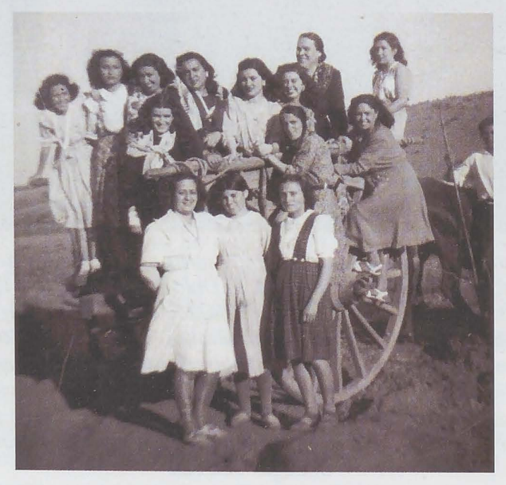

La Codosera nunca llegó a ser un núcleo habitado importante pero,
no por ello, vivió ajeno a las vicisitudes que, a lomos del tiempo,
han ido conformando lo que hoy somos y tenemos".
Luis Alonso Rubio
La Codosera: Secuencia histórica de una villa rayana.
Historia
La historia de La Codosera, es la historia de un pueblo fronterizo, por su situación
junto a la "Raya" de Portugal. Su dilatada historia se remonta a los primeros europeos. La evolución
histórica ha sido muy compleja, y a la par muy rica culturalmente. En ningún período histórico ha
estado despoblada. Con el tiempo, la cultura fronteriza ha salpicado a La Codosera con manifestaciones
culturales y artísticas, que han ido forjando la cultura y el carácter de esta población. Tradicionalmente
se sitúan las primeras noticias de La Codosera como núcleo de población en el siglo XII, aunque se
considera que la comarca estuvo habitada desde la prehistoria.

Iglesia parroquial de Ntra. Sra. De la Piedad.
Es el edificio religioso más importante de la localidad. En su exterior está construido con parámetros de mampostería lucidos.
Estos parámetros se encuentran reforzados por ocho robustos contrafuertes. En dos de estos contrafuertes se pueden apreciar gárgolas.
La iglesia tiene dos portadas. En su interior tiene una sola nave rectangular. Esta nave está distribuida en tres tramos soportados
por arcos de medio punto que sostienen una bóveda de cañón. El presbiterio se cubre con una bóveda de crucería que presenta las claves
decoradas con motivos religiosos. Al lado del evangelio se encuentra la sacristía, que puede ser del siglo XV.
El tempo, en general, presenta un carácter gótico- renacentista por lo que pudo ser construido en los últimos años del siglo XV y
comienzos del siglo XVI. Aunque tiene añadidos del siglo XVIII.
El altar mayor es de madera sobredorada y fue construido durante la época de la transición entre el Renacimiento y el Barroco en estilo
manierista. Las obras que alberga el altar son tallas de San Francisco (S. XVIII), San Juan Bautista (S. XVII) y la titular de la parroquia,
la Virgen de la Piedad con el niño sentado en su brazo (S.XVII) y las pinturas de la Virgen con el niño (S. XVIII), Asunción de la Virgen y
Anunciación de María (ambos del S. XVII).
En la iglesia también podemos encontrar obras de Jenaro Lázaro Gumiel, como son el Cristo Crucificado que procesiona en la Semana Santa de
La Codosera.
Ermita de Nuestra Señora de la Luz.
Pequeña capilla situada junto al cementerio municipal. El edificio popular tiene una planta rectangular dividida en tres secciones. El
presbiterio está cubierto por una bóveda policromada del S. XVI, destacando por su antigüedad. El altar de la capilla es del S. XVIII
de estilo barroco y está presidido por una imagen de la Virgen María con el niño en brazos.
Castillo de La Codosera y Cristo.
A 378 metros sobre el nivel del mar, en la parte más alta de la localidad, se sitúan los restos del castillo de la localidad. Construido
en el primer cuarto del siglo XIV, sirvió de atalaya y primera línea defensiva de Alburquerque en las guerras con Portugal entre los años 1640 y
1668. Por esta situación geográfica fue destruido y reconstruido muchas veces.
En el día de hoy sólo quedan unos muros sobre los que se ha levantado una vivienda, con una torre de tres cuerpos, simulando al antiguo castillo.
De lo antiguo sólo quedan restos de lo que fuera la muralla.
En uno de estos "muñones" de lo que fuera la antigua muralla se erige colosal la figura del Sagrado Corazón de Jesús en actitud de bendecir al
pueblo. Esta obra fue realizada por el escultor Jenaro Lázaro Gumiel en el año 1957.
El Castillo se encuentra bajo la protección de la Declaración genérica del Decreto de 22 de abril de 1949, y la Ley 16/1985 sobre el Patrimonio
Histórico Español.
Actualmente el Castillo es de propiedad privada y no se puede visitar.
Santuario de Nuestra Señora de Chandavila.
A unos dos kilómetros y medio de la localidad, en un paisaje cubierto de pinos, castaños, encinas o eucaliptos, se encuentra ubicado el Santuario
en honor a la Virgen de los Dolores de Chandavila.
El Santuario de Chandavila es el fruto de varias apariciones de la Virgen a dos niñas de la localidad. Estas apariciones tuvieron lugar en esos
parajes en el año 1945.
La iglesia del Santuario, que comenzó a construirse en 1947, está construida con materiales modernos. Sobresale en su vista exterior la torre de
tres cuerpos situada a los pies de la iglesia. Las campanas de la iglesia se encuentran ubicadas en esta torre, en el cuerpo central.
El interior del templo es de una sola nave formada por cuatro tramos y el camarín de la Virgen situado en la cabecera. El altar mayor es de estilo
barroco tardío, realizado en madera sobredorada. Está formado por una hornacina central donde se encuentra la imagen de la Virgen de los Dolores
custodiada por dos columnas y envuelta en un cerco adornado por un arcángeles. Todo el conjunto del altar fue realizado por el escultor Jenaro Lázaro
Gumiel. El mismo artista es el autor de los cuadros que se encuentran en las paredes laterales de la iglesia.
En el conjunto del Santuario hay otras edificaciones de interés, como son el templete que cobija al pozo, la capilla donde se encuentra el tronco
del castaño en el que tuvieron lugar las apariciones, un altar exterior y una pequeña capilla. Además en el Santuario se encuentra el Museo Lázaro Gumiel.
Ermita de La Varse.
Situada en el Caserío del mismo nombre, en su interior guarda las imágenes de San Isidro Labrador y la Virgen del Carmen.
Ruinas del Puente Romano.
En las orillas del Río Gévora se encuentran las ruinas del puente romano que al parecer se mantuvo en pie hasta el segundo tercio del siglo XX.